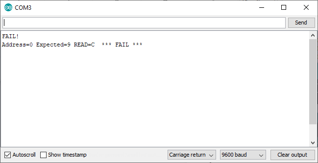

APPLE-1 PROM TESTER
PROJECT DESCRIPTION
A quick way to test all the PROMS of the APPLE-1 Computer.
Each 256x4 PROM contains half a byte (one nibble).
The firmware automatically detects and tests the PROM by comparing each nibble with the original code stored in the Arduino's permanent FLASH.
Each PROM is tested individually. Both WOZ Monitor and Cassette Interface are supported.
No responsibility is taken in case of damages or whatsoever.
BILL OF MATERIALS
An Arduino Nano (or compatible), a breadboard and some wires.
RESOURCES
Source code [ino]
Gerber file [zip]
Schematic (download the image for full resolution)
USAGE
Disconnect every power source from Arduino.
Connect the PROM as shown in the wiring diagram (or make a PCB using the Gerber file), using all anti-ESD precautions.
Once connected to the power the test will begin immediately. Progress can be seen via terminal (default speed: 115200 baud, N81).
If the PROM is found healthy a "PASS" message will appear in few seconds along with the detected model (The built-in LED will flash in a heartbeat style).
In case of failure during the reading an error message will appear (the built-in LED will be lit steadily):

Push RESET to test again. Always disconnect the power before removing the PROM.